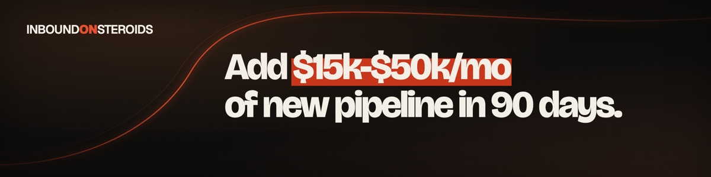
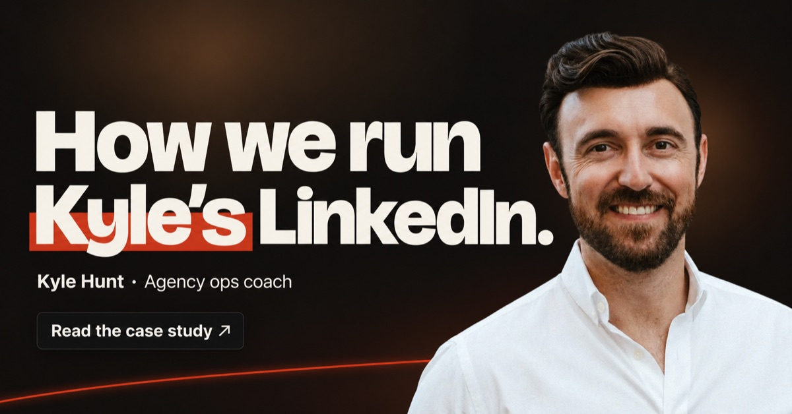
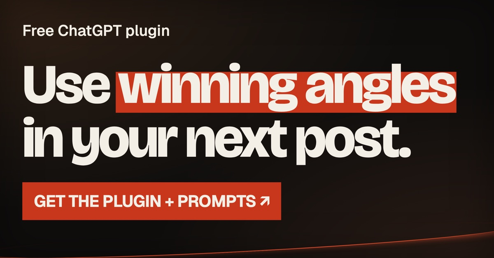
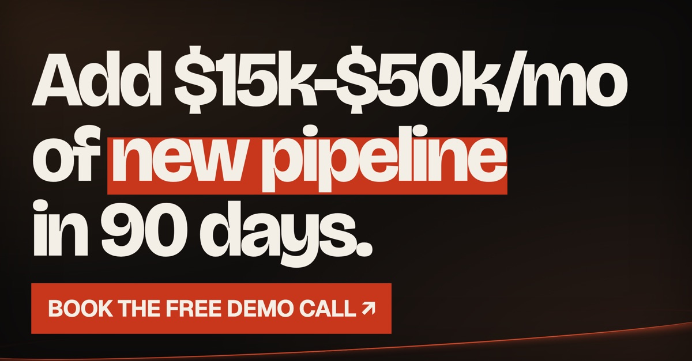

Tu LinkedIn,
igual al mío.
Anna, te dejé todo listo para copiar y pegar. Son 12 pasos cortos, en unos 20 minutos lo tenés. Hacelo desde la compu, que es más fácil.
Así te tiene que quedar
Misma portada, mismo titular y los mismos destacados que tengo yo.

Anna
Agency owners: add $15k-$50k/mo from LinkedIn in 90 days with content + outreach, run for you.
Milan, Lombardy, Italy
Growth Partner · InboundOnSteroids
Featured



Paso a paso
Tocá cada paso, copiá lo que hay adentro y apretá «Listo». Se va guardando solo.
1PortadaLa misma que la mía

- En tu perfil, tocá el lápiz arriba a la derecha de la portada.
- Subí la imagen que bajaste y guardá.
2Foto de perfilUna tuya, de frente y con buena luz
Tocá el círculo de la foto y subí una donde se te vea bien la cara, con fondo simple. Si no tenés una buena, sacate una contra una pared lisa con luz de ventana.
3TitularEl mismo que el mío
- Tocá el lápiz de la primera sección (al lado de tu nombre).
- En «Titular», borrá lo que haya y pegá esto:
Agency owners: add $15k-$50k/mo from LinkedIn in 90 days with content + outreach, run for you.No guardes todavía, seguí con el paso 4 que es en la misma pantalla.
4UbicaciónMilán, como la mía
- En esa misma pantalla, bajá hasta «Ubicación».
- País: Italia. Ciudad: escribí Milan y elegí «Milan, Lombardy, Italy».
- Ahora sí, guardá.
5Acerca deEl texto largo de presentación
- Buscá «Acerca de» en tu perfil y tocá el lápiz. Si no aparece: «Añadir sección» → «Principal» → «Acerca de».
- Pegá esto entero y guardá:
Agency owner doing 6 or 7 figures a year?
Want to add $15k-$60k/mo of revenue from LinkedIn, all run for you? Read this 👇
Because you're on my profile, a few things I'd bet are true:
1. You know LinkedIn can get you clients, you just never get around to the content or the outreach
2. You tried a ghostwriter, and the posts didn't sound like you
3. You tried a lead-gen agency, and months of retainer bought zero pipeline
4. You don't want to hire and manage a $3k-$6k/mo content person
5. You'd rather own the audience and pipeline than rent an agency forever
I get it.
We set this up for our own agency work first, to post daily and drive inbound without it eating the week. Then every operator we talked to wanted the same thing.
So here's what we package. One idea becomes posts, carousels, and lead magnets, and your feed stays active while you run the agency.
The posts pull readers in, and a lead magnet inside them turns the ones who engage into named leads in your inbox.
The comments and DMs are handled, and the ones worth talking to end up in your calendar. Everything stays yours: the audience, the email list, the content, and every lead captured.
EFFECTS OBSERVED IN AGENCY OWNERS:
A feed that sells your agency, leads in the inbox, an audience you own. Measured in booked calls.
Want to see what your feed could look like? DM me and I'll show you, free.
Or book the free fit call at inboundonsteroids.com6Tu puestoGrowth Partner en InboundOnSteroids
- En «Experiencia», tocá + → «Añadir puesto».
- Completá así:
Growth PartnerInboundOnSteroidsCuando escribas la empresa, elegí la que aparece con el logo (esta). Tipo de empleo: Jornada completa. Fecha de inicio: octubre 2026, con «Actualmente trabajo aquí» marcado. Ubicación: Milan, Lombardy, Italy, modalidad En remoto.
We make LinkedIn a revenue line for agency founders: content + outreach, run for you, 24/7.7DestacadosLos 3 que tengo yo: caso de Kyle, plugin y llamada
Para cada uno: «Añadir sección» → «Recomendado» → «Destacados» → + → «Añadir un enlace». Pegá el link, cambiá el título por el de abajo y en «Miniatura» subí la imagen que bajaste. Hacelos en este orden.
1 · Caso de Kyle

https://inboundonsteroids.com/case/kyle-hunt/How we run Kyle’s LinkedIn2 · Plugin gratis

https://resources.ivanmanfredi.com/content-brain-guide/Free Inbound Content Patterns plugin and prompt pack3 · Reservar llamada

https://calendly.com/im-ivanmanfredi/30minBook a call with Iván8AptitudesLas 8 de marketing que tengo yo
En «Aptitudes», tocá +, pegá cada una y elegí la sugerencia de LinkedIn. Tocá un chip para copiarlo:
Si tenés aptitudes de programación cargadas, sacalas o mandalas al fondo.
9IdiomasEnglish y Spanish
- «Añadir sección» → «Adicional» → «Idiomas».
- English con tu nivel real.
- Spanish con «Competencia bilingüe o nativa».
10Web en contactoinboundonsteroids.com
Arriba, en «Información de contacto» → lápiz → «Sitio web», agregá:
https://inboundonsteroids.comTipo: «Empresa». Guardá.
11Seguí la empresa y agregameDos clics
- Entrá a InboundOnSteroids ↗ y tocá «Seguir».
- Entrá a mi perfil ↗ y tocá «Conectar».
12Conectá tu LinkedIn a UnipileAsí arrancamos con los mensajes
- Tocá el botón, se abre otra pestaña.
- Elegí LinkedIn y entrá con tu mail y contraseña. Si te pide un código, ponelo ahí.
- Cuando diga que está conectado, volvé acá.
¡Listo! 🙌
Mandame el link de tu perfil por WhatsApp y lo miro.